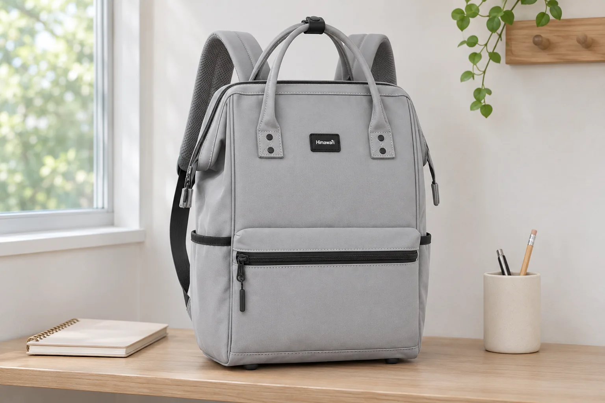
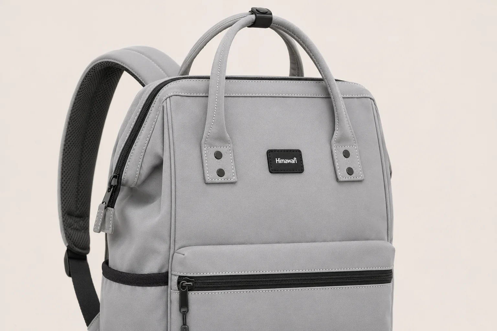
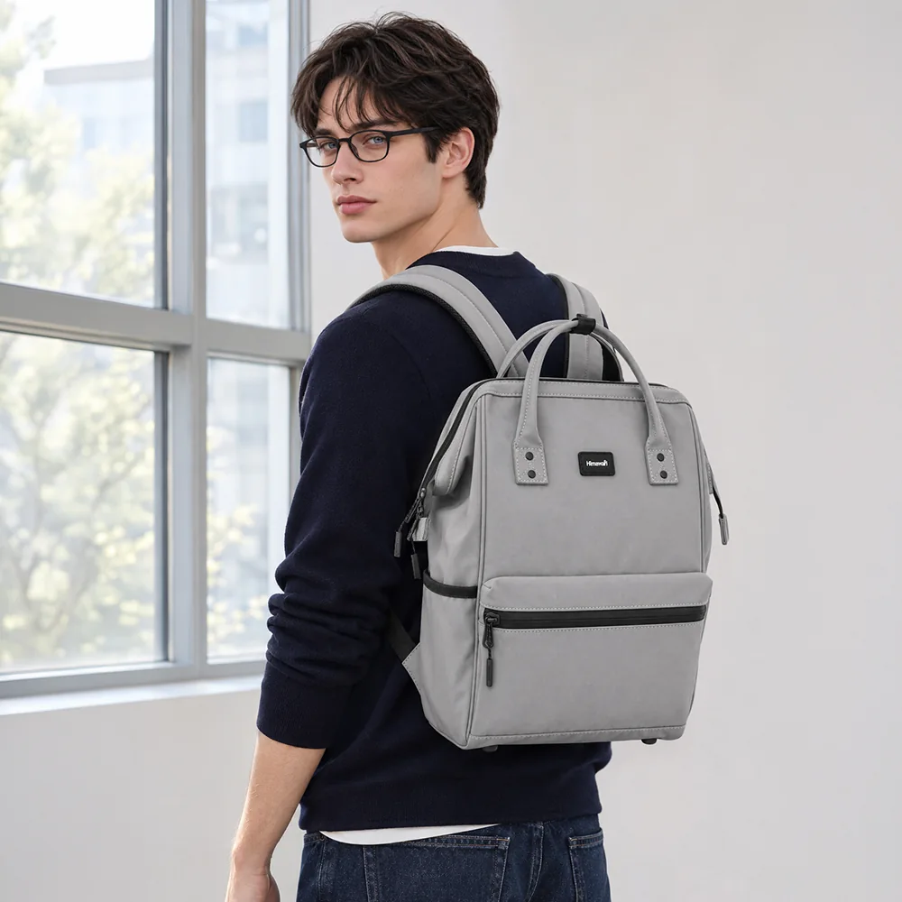

백팩 높이 40cm에 위 손잡이도 포함될까

라이트그레이 1884M의 제품 사양에는 가로 28cm, 세로 40cm, 폭 17cm가 적혀 있습니다. 실제 제품 소개 사진에서는 위쪽 손잡이 두 개가 몸판보다 높게 올라와 있습니다. 세로 40cm는 제품에 적힌 외부 크기입니다. 다만 현재 공개 자료만으로는 이 높이가 손잡이 끝까지 잰 값인지 확인할 수 없습니다. 사진에서 손잡이가 몇 센티미터 올라오는지 추정해 40cm에 더해도 포함 여부를 알아낼 수는 없습니다. 높이가 중요한 자리라면 가방을 어떤 상태로 두고 비교할지 먼저 정해야 합니다.
제품 사양을 비교할 때의 높이
두 가방의 치수를 화면에서 나란히 볼 때는 가로와 폭을 서로 바꾸어 읽지 않도록 세 숫자의 순서를 맞춥니다. 세로를 어느 지점까지 쟀는지 설명이 있는지도 봅니다. 손잡이를 몸 쪽으로 늘어뜨린 사진과 손잡이를 세운 사진에 같은 세로 수치가 적혀 있을 수도 있습니다. 사진으로는 모양을 보고 치수 표로는 제품 크기를 비교할 수 있지만 손잡이 끝까지 재었다는 설명이 있는지는 따로 봐야 합니다.
판매처에 묻는다면 ‘높이가 얼마인가요?’만 보내기보다 필요한 조건을 함께 적습니다. 예를 들어 바닥에서 몸판 위쪽까지의 높이와 원래 손잡이가 자연스럽게 올라온 상태에서 가장 높은 곳까지의 높이를 각각 알고 싶다고 쓸 수 있습니다. 손잡이가 위로 솟아 있는 이유가 실제 구조 때문인지 촬영할 때의 자세 때문인지도 사진만으로 단정하기 어렵습니다. 1884M 라이트그레이와 같은 번호의 다른 색이나 거래처의 비슷한 라이트그레이를 비교할 때는 모델과 세부 옵션 이름이 맞는지도 함께 확인합니다.

이미 가진 가방에서 두 높이를 재려면
비어 있는 가방을 평평한 바닥에 올리고 한쪽으로 기울어지지 않게 놓습니다. 몸판의 위쪽 끝을 찾습니다. 같은 바닥에서 그 지점까지의 높이를 읽습니다. 원단이 기울어져 있다면 줄자를 면에 붙여 사선 길이를 읽기보다 바닥에서 수직으로 재야 선반 높이와 비교할 수 있습니다. 길이를 읽을 때 줄자로 손잡이를 누르면 자세가 달라질 수 있습니다. 접히기 쉬운 손잡이는 평소 놓였을 때의 상태를 말로 적어 두는 편이 낫습니다.
손잡이를 포함한 값도 같은 바닥에서 읽습니다. 손잡이가 자연스럽게 뉜 상태와 사람이 당겨 세운 상태는 눈높이를 낮춰 각각 어떻게 놓이는지 봅니다. 두 상태가 쉽게 바뀌는 가방이라면 측정값 옆에 ‘비워서 놓음’, ‘손잡이를 모아 놓음’처럼 조건을 몇 글자 붙입니다. 가방을 눌러 가장 작아졌을 때 잰 높이는 가방을 그대로 둘 자리의 높이와 비교하기 어렵습니다. 반대로 손잡이를 최대한 팽팽하게 잡아 올려 잰 값도 어떤 자세를 재현했는지 알아야 쓸 수 있습니다.
짐을 담아 평소처럼 닫은 상태에서도 한 번 더 보면 좋습니다. 같은 가방이라도 빈 상태와 넣고 다니는 상태에서 위쪽 면이 놓이는 모습이 다를 수 있습니다. 어떤 짐 때문에 모양이 달라졌는지 보려면 가방을 비웠을 때와 평소 짐을 담았을 때 같은 책상이나 바닥에 가방을 놓아 봅니다. 자주 담지 않는 물건 때문에 한쪽이 솟은 날의 숫자를 매일 필요한 높이로 기록하면 보관 자리를 지나치게 넓게 잡을 수 있습니다. 반대로 빈 가방만 재면 막상 사용하는 자세가 빠집니다.

들어가는 높이와 손이 들어갈 높이
선반에 가방이 들어가도 손잡이를 잡아 꺼낼 공간은 모자랄 수 있습니다. 위쪽 여유가 적으면 바닥을 받쳐 꺼낼 수는 있어도 손잡이에 손가락을 넣으려다 손등이 선반 윗면에 먼저 닿을 수 있습니다. 종이에 적은 40cm와 선반 칸의 안쪽 치수가 비슷하다면 숫자만으론 여유가 충분한지 판단하기 어렵습니다. 가방을 평소 방향으로 놓고 손을 뻗어 봐야 몸판이 닿는지 손이 닿는지 구분할 수 있습니다.
같은 선반에서도 가방을 먼저 살짝 앞으로 당겨 손잡이를 잡는 배치는 가능할 수 있습니다. 다만 그때는 앞쪽으로 가방을 당길 공간과 가방 바닥을 받칠 자리도 남아야 합니다. 고정해 놓은 물건에 닿을 만큼 힘을 써야 하거나 손잡이를 계속 눌러 두어야 한다면 가방보다 낮은 선반에 억지로 맞추기보다 다른 칸과 비교해 보는 게 좋습니다. 이미 가진 가방이라면 선반에 올려놓은 뒤 평소처럼 한 손으로 꺼내 보는 편이 빠릅니다.
의자 아래처럼 앞쪽과 안쪽 높이가 다른 곳에선 넣고 꺼낼 때 두 곳의 높이를 따로 봐야 합니다. 안에 넣은 상태의 높이가 충분해도 꺼낼 때 앞의 가로대 아래로 손잡이가 먼저 나와야 할 수 있습니다. 본체가 반쯤 나왔을 때 손잡이를 잡는 동작과 안에서 손잡이를 잡은 뒤 가방을 통째로 들어 빼는 동작의 높이는 다릅니다. 두 위치를 작은 메모로 남겨 두면 숫자를 다시 볼 때 어디에서 좁았는지 알 수 있습니다.
1884M의 40cm처럼 제품에 적힌 높이는 후보를 비교할 때 쓸 수 있습니다. 집에 있는 가방과 나란히 놓아 크기를 가늠하려면 두 가방을 같은 상태로 놓습니다. 선반에서 꺼낼 때는 손잡이 끝과 손등이 지나갈 공간을 따로 봅니다. 가장 높은 곳까지의 실제 수치가 필요하면 같은 옵션의 제품 안내나 판매처에서 그 지점을 확인해 두세요. 40cm의 기준점을 알면 사진에서 손잡이가 높아 보인다고 치수를 크게 잡거나 남는 공간을 너무 작게 잡을 일이 줄어듭니다.